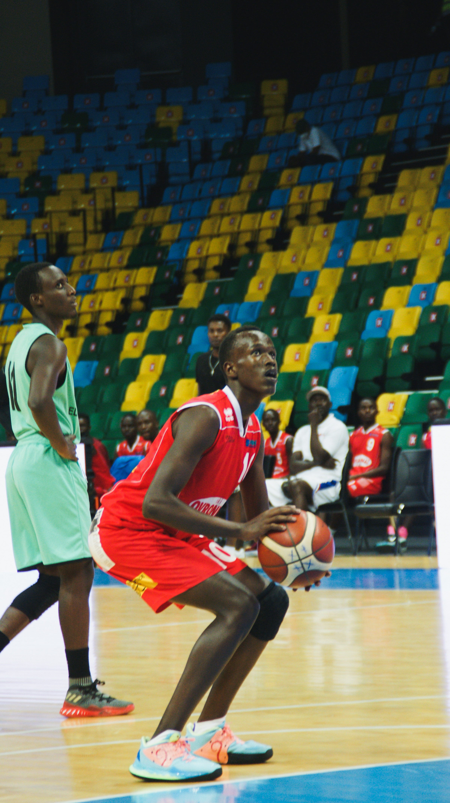
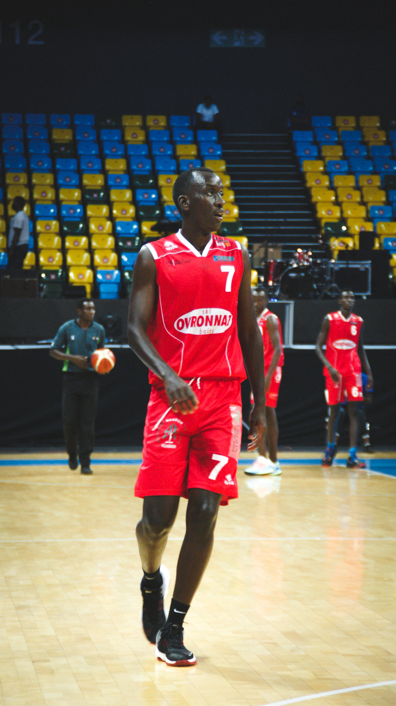
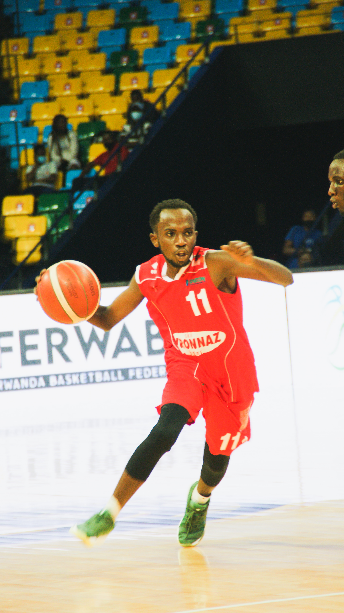
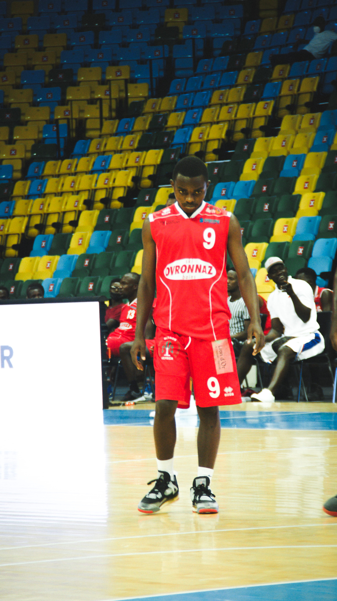

Click on Photo




Statistics
Two weeks ago, the Rwanda Basketball Federation (Ferwaba) named Moise Mutokambali as new technical director. The veteran basketball coach comes in to replace Joseph Wright, an American national who held the position for one year. Times Sport sat down with the tactician to talk about what he will do to improve local basketball during his tenure. Excerpts: How do you feel after being appointed Ferwaba’s new technical director? I am very happy to have been entrusted with the job and I am confident that I will try to fulfill my responsibilities as I work together with all relevant stakeholders. What are your responsibilities as a technical director? I will mainly work with coaches to improve the level of the game in the country. Here, we will do things like training coaches, monitoring the national teams - working together with coaches to improve the programs they have for the national teams.